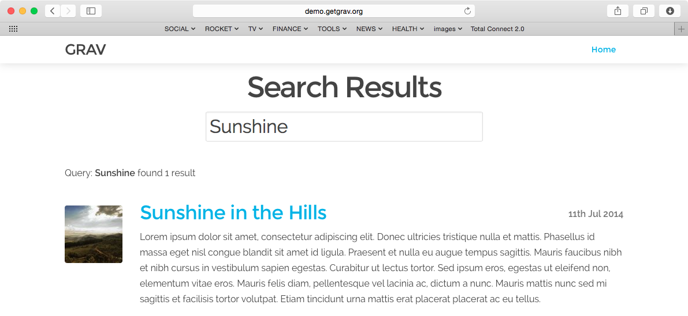

SimpleSearch is a simple, yet very powerful Grav plugin that adds search capabilities to your Grav instance. By default it can search Page Titles, Content and also Taxonomy.
Installing the SimpleSearch plugin can be done in one of two ways. Our GPM (Grav Package Manager) installation method enables you to quickly and easily install the plugin with a simple terminal command, while the manual method enables you to do so via a zip file.
The simplest way to install this plugin is via the Grav Package Manager (GPM) through your system's Terminal (also called the command line). From the root of your Grav install type:
bin/gpm install simplesearch
This will install the SimpleSearch plugin into your /user/plugins directory within Grav. Its files can be found under /your/site/grav/user/plugins/simplesearch.
To install this plugin, just download the zip version of this repository and unzip it under /your/site/grav/user/plugins. Then, rename the folder to simplesearch. You can find these files either on GitHub or via GetGrav.org.
You should now have all the plugin files under
/your/site/grav/user/plugins/simplesearch
NOTE: This plugin is a modular component for Grav which requires Grav, the Error and Problems plugins, and a theme to be installed in order to operate.
To effectively use the plugin, you first need to create an override config. To do so, create the folder user/config/plugins (if it doesn't exist already) and copy the simplesearch.yaml config file in there.
enabled: true
built_in_css: true
display_button: false
min_query_length: 3
route: /search
template: simplesearch_results
filters:
category: blog
filter_combinator: and
order:
by: date
dir: desc
By creating the configuration file: user/config/plugins/simplesearch.yaml you have effectively created a site-wide configuration for SimpleSearch. However, you may want to have multiple searches.
NOTE: If you want to search ALL PAGES just keep the
filterssection empty.
To accomplish multiple search types in a single site, you should use page-based configuration. This is simple to do, simply provide any or all of the configuration options under a simplesearch: header in your page frontmatter. For example:
simplesearch:
route: @self
filters:
- @self
- @taxonomy: [tag]
filter_combinator: and
These page headers will only be taken into account if the search route points to this page. For example: here the the route points to @self which in turn resolves to /blog. You can also specify the route explicity with route: /blog if you so choose. This header is within the /user/pages/blog/blog.md file. We will cover this self-controlled form of search handling below.
There are two approaches to using SimpleSearch.
This is the traditional approach and involves having a searchbox 'somewhere' on your site. When you search you are shown a new page that displays the search results. On this page you will see a summary of the results and be able to click a link to visit each applicable page within your site. Think about how Google and other traditional search engines work.
After installing the SimpleSearch plugin, you can add a simple searchbox to your site by including the provided twig template. Or copy it from the plugin to your theme and customize it as you please:
{% include 'partials/simplesearch_searchbox.html.twig' %}
By default the simplesearch_searchbox Twig template uses the route as defined in the configuration. The SimpleSearch plugin uses this route and then appends a query: paramater to create the following final URL.
http://yoursite.com/search/query:something
/search: This is the route setting and it can be changed/query:something: This is the query itself, where something is what you are searching for.The plugin actively looks for URLs requested that match the configured route and if so it intercepts the call and renders the results template as specified by the configuration options, (defaults to simplesearch_results.html.twig as provided by the plugin).
With this approach, the filters control which pages are searched. You can have multiple taxonomy filters here, and can configure the combinator to require any match (via or) or require all conditions to match (via and).
You can also completely customize the look and feel of the results by overriding the template. There are two methods to do this.
Copy the file templates/simplesearch_results.html.twig under your theme templates user/themes/_your-theme_/templates/ and customize it.
Create your very own results output. For this you need to change the template reference in the config (let's say mysearch_results). In your theme you would then create the new template under user/themes/_your-theme_/templates/mysearch_results.html.twig and write your customizations. This is how it looks by default:
{% extends 'partials/simplesearch_base.html.twig' %}
{% block content %}
<div class="content-padding">
<h1 class="search-header">Search Results</h1>
<h3>Query: "{{ query }}" - Found {{ search_results.count }} {{ 'Item'|pluralize(search_results.count) }}</h3>
{% for page in search_results %}
{% include 'partials/simplesearch_item.html.twig' with {'page':page} %}
{% endfor %}
</div>
{% endblock %}
This is a new feature of SimpleSearch and it very useful and simple way to provide a 'filter' like search of a collection listing page. In this example, we will assume you have a Blog listing page you wish to be able to search and filter based on a search box.
To accomplish this, you need ot use the page-based configuration as described above, and configure multiple filters, @self to use the page's content collection: http://learn.getgrav.org/content/headers#collection-headers
content:
items: @self.children
order:
by: date
dir: desc
This will mean the search will only search pages that this page already is using for the collection. The Items could be anything the page collections support:
For further help with the filters and order settings, please refer to our Taxonomy and Headers documentation.
Multiple filters can be provided, and in order to search in the page's Tag field you would add - @taxonomy: [tag] as shown in the configuration example above.
The only thing needed to provide this functionality is a search box that points to the current page and appends the query parameter. You can again simple include the sample simplesearch_searchbox.html.twig file or add your own. Because the route is configured to point to the blog page, and because the blog page already iterates over a collection, SimpleSearch will replace the page collection with the search-filtered collection. No results page is required.
By default SimpleSearch will search in the Title, Content, and Taxonomy. All taxonomy will be searched unless you provide a taxonomy filter either in the page, or in the global plugin configuration:
filters:
- @taxonomy: [tag]
This will ensure that only tag taxonomy types will be searched for the query.
filters:
- @taxonomy: [tag, author]
Will ensure that both tag and author taxonomy types are searched.
As all taxonomy sis searched by default, in order to stop searching of taxonomy completely simply set the filter to false:
filters:
- '@taxonomy': false
As development for SimpleSearch continues, new versions may become available that add additional features and functionality, improve compatibility with newer Grav releases, and generally provide a better user experience. Updating SimpleSearch is easy, and can be done through Grav's GPM system, as well as manually.
The simplest way to update this plugin is via the Grav Package Manager (GPM). You can do this with this by navigating to the root directory of your Grav install using your system's Terminal (also called command line) and typing the following:
bin/gpm update simplesearch
This command will check your Grav install to see if your SimpleSearch plugin is due for an update. If a newer release is found, you will be asked whether or not you wish to update. To continue, type y and hit enter. The plugin will automatically update and clear Grav's cache.
Note: Any changes you have made to any of the files listed under this directory will also be removed and replaced by the new set. Any files located elsewhere (for example a YAML settings file placed in
user/config/plugins) will remain intact.